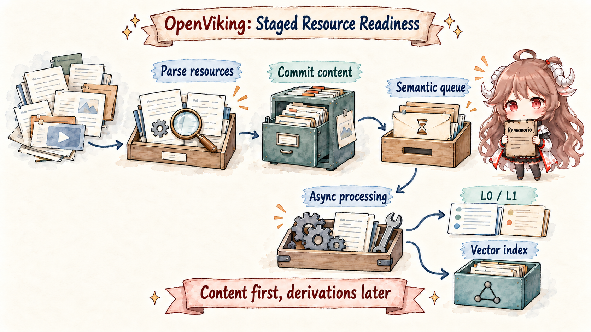
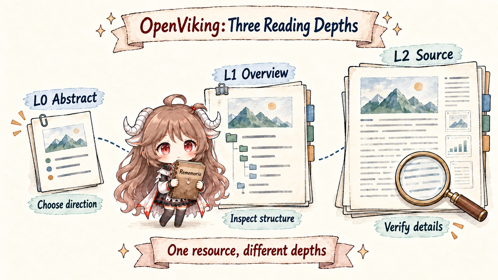
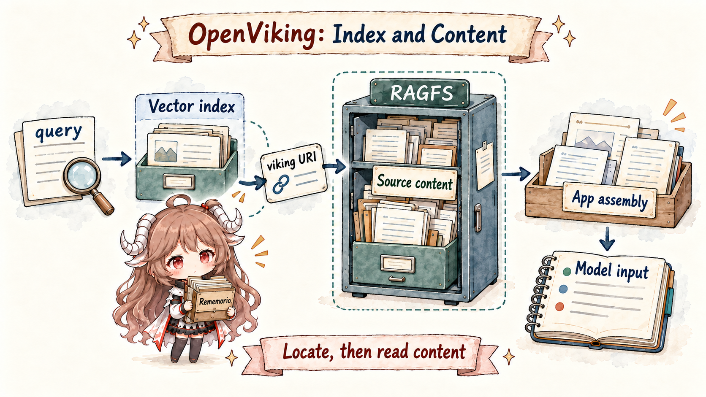
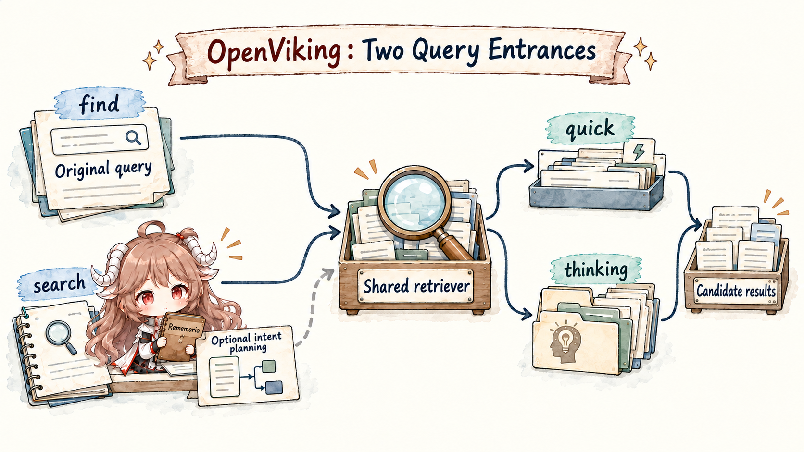
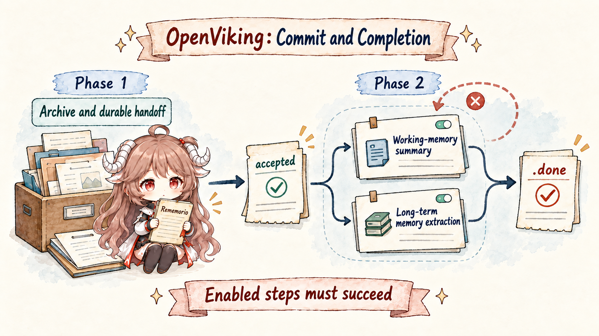
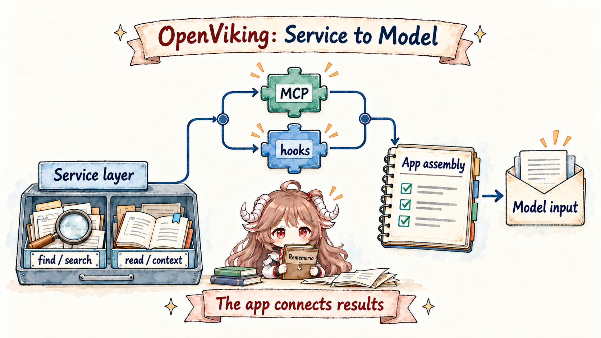

Put one concrete task on the desk. You ask a coding agent to fix duplicate charges in an expense system. During its first investigation it reads the billing repository, a payment API guide, and three test logs, then narrows the problem to an idempotency key. You also say, explicitly, “do not mock the database here.” Two days later you open a new session and say only: “continue that expense bug—first check whether tenant configuration caused it.”
Four kinds of context must arrive together. The repository and documentation are resources. The point reached in the previous investigation is session history. “Do not mock the database” is long-term memory. Checking tenant configuration may require a reusable skill or workflow. A conventional stack gives each a separate home: files enter a knowledge base, preferences enter a memory store, skills stay in a local directory, and the agent runtime owns sessions. Each part can work. The hard part is making the next answer decide where to look, how deeply to read, and what actually belongs in the prompt.
OpenViking's core answer is not “replace the vector database with a better one.” It first gives context a shared address, hierarchy, and lifecycle.
Default search returns candidates; context mode can also read and assemble material within a budget. Original content remains evidence in content storage; the integration decides when to call and how to place the result into model input.
Once that order is clear, L0/L1/L2, find/search, and session commit stop looking like a pile of new nouns.
They become one process from ingestion and location to deep reading and recovery.
Questions this article answers.
By the end, you should be able to use the same expense bug to explain five things: why OpenViking puts resources, memories, and skills in one tree;
how a repository persists source content before asynchronously gaining L0/L1 and an index; why L0/L1/L2 are reading depths rather than memory stages;
how find and search locate candidates; and why a session commit is split into two recoverable phases.
Source scope. This article uses OpenViking's official documentation and public repository, pinned to 0f77ab56. Documentation establishes public concepts and APIs; source establishes the observable ingestion, retrieval, and session-commit paths; suitability judgments are bounded engineering inferences. Capabilities explicitly described as planned are not presented as implemented, and project-reported benchmarks are not used as conclusions here.
1. It does not add a memory box; it redraws the context address book
1.1 Why three kinds of material belong in one tree
Return to the expense bug. billing/retry.py does not become user memory merely because the agent read it once.
“Do not mock the database” should not be mixed into public project documentation. A reliable tenant-check procedure is closer to a reusable skill.
OpenViking preserves those differences while giving them a shared addressing convention: the URI first says which user or account it belongs to and what kind it is;
each kind then keeps its own lifecycle.
viking://
├── resources/ # public or account-scoped resources
├── user/{user_id}/
│ ├── memories/ # persistent knowledge learned from interactions
│ ├── resources/ # private user resources
│ ├── skills/ # private user skills
│ └── sessions/{session_id}/ # live messages and history archives
└── agent/
└── skills/ # account-shared skills
The first benefit is an explicit storage location. Shared payment documentation can live under viking://resources/.
A user's project constraint can live under viking://user/{user_id}/memories/.
A team-wide checking procedure can live under viking://agent/skills/. Retrieval returns more than similar prose: it can retain URI,
context type, level, and scope. The official
context-types documentation
draws the same line between user-added resources, persistent knowledge learned from interaction, and executable skills.
| Material in the expense task | Natural location | Why the distinction matters |
|---|---|---|
| Billing repository and payment API guide | Resource | They are external evidence. Updates come from source material, not from a model's judgment in one conversation. |
| “Do not mock the database in this project” | Memory | It comes from user interaction, needs user/policy isolation, and may be recalled across sessions. |
| A reliable tenant-configuration check | Skill | It describes how to act, not merely a fact about the project. |
| The investigation that reached the idempotency key | Session archive | It starts as full evidence; only later may policy produce summaries and long-term memories. |
1.2 “Filesystem” describes the interaction model, not “a database made of local files”
OpenViking often calls itself a context filesystem. The easiest mistake is to read that as “everything is directly stored in folders on one disk.”
In practice, viking:// is a URI abstraction offering operations that feel like ls, read, mv,
abstract, overview, and find. Beneath it, content storage and index storage remain separate.
“Filesystem” gives the system addresses, hierarchy, and familiar operations. It does not imply a trivial deployment or a local-only backend.
2. How a repository grows into a context tree: source first, semantics later
Now ingest the billing repository as a new resource. A dangerous design would summarize while ingesting and treat the summary as the only record: if the model call fails,
the resource is half-present; if the summary distorts a fact, there is no independent evidence left. OpenViking's ingestion path parses source material,
builds final URIs, and commits content before the semantic queue completes L0/L1 and vector indexing. The ordering matters more than the class names:
recoverable source becomes fact before model-generated representations arrive.

2.1 The five source steps explain more than a one-line add API
The docstring of
ResourceProcessor.process_resource()
lists parse, URI metadata, source commit, vector index, and summarization. The implementation first lets a media processor write content into a temporary area.
TreeBuilder.finalize_from_temp() then derives the final URI and temp_uri metadata; only afterward does
ResourceProcessor call VikingFS.persist_temp_tree()
to copy the temporary tree into its formal location. The parser understands shape, TreeBuilder chooses addresses, and VikingFS persists content. None asks an LLM to invent a repository tree from prose.
# Only the source call-chain skeleton
parse_result = await media_processor.process(source=path, ...)
context_tree = await tree_builder.finalize_from_temp(
temp_dir_path=parse_result.temp_dir_path,
scope=scope,
to_uri=to,
)
root_uri = context_tree.root.uri
temp_uri = context_tree.root.temp_uri
await viking_fs.persist_temp_tree(temp_uri, root_uri, ...)
# After source commit, the semantic queue adds L0/L1 and the index.
The semantic processor's responsibility is equally explicit:
generate .abstract.md and .overview.md bottom-up,
then vectorize those representations. Child summaries exist before a parent writes its overview. The repository therefore becomes a navigable hierarchy,
not a bag of unrelated chunks.
Ingested does not yet mean searchable.
Successful add_resource and “every node is semantically searchable” are not the same moment. Queueing, retries, and circuit breaking make ingestion recoverable,
while introducing eventual consistency. If a product promises immediate search-after-upload, its caller must wait for processing status rather than treat add as an indexing barrier.
This five-step walkthrough follows a new directory under normal semantic processing. It does not mean every write generates summaries.
Current finish_prepared_resource() also distinguishes existing-directory updates, single files,
and vectors_only. The last skips L0/L1 generation, synchronizing files and building vectors as requested;
existing-directory synchronization may also be handed to post-processing. Observe content persistence, summary generation, and search visibility separately.
3. L0, L1, and L2 are reading depths, not short-, medium-, and long-term memory
Once the repository is in the tree, the agent should not swallow the entire billing directory to answer “where is tenant configuration read?” OpenViking gives one node three representations. L0 is a short abstract for deciding whether a path is promising. L1 is a structured overview for understanding what a branch contains and where to descend. L2 is the original file or complete content. They answer “how deeply should I read?”, not “how long should I remember?”

viking://resources/billing/
├── .abstract.md # L0: what this is, roughly one hundred tokens
├── .overview.md # L1: what this branch contains and how to navigate it
├── .relations.json # related URIs
├── tenant-config.md # L2: complete document
└── retry.py # L2: original codeThe official context-layer documentation assigns L0 to vector search and quick filtering, L1 to reranking and navigation, and L2 to on-demand complete content. That explains why a retrieval result carrying abstract and level is useful: a caller can choose a path before paying the token cost of source content.
3.1 The content tree proves; the vector index guides
Another mistake follows quickly: if the vector database carries abstracts, has it become the source of truth? OpenViking's storage documentation draws a clear division. RAGFS stores L0/L1/L2 content and relations; the vector database stores URIs, vectors, and metadata to locate candidates. Moving, deleting, or renaming requires coordinated maintenance, but “what did the source actually say?” is still answered from the content layer.

4. From retrieval candidates to context within a budget
Start with the default list mode. “Continue that expense bug” contains none of the full phrases “billing,” “idempotency key,” or “tenant configuration.”
If an application already knows what it wants, find sends the raw query straight to the retriever. If it passes the current session to
search, the system can first use an archive overview, recent messages, and the current query to split the vague request into typed, prioritized queries.
After planning, both APIs call HierarchicalRetriever.retrieve(). Their difference is whether session-aware query planning happens first,
and find explicitly selects quick while candidate retrieval through search defaults to thinking.

find skips session intent planning. With session context and intent enabled, search performs query planning first.
Quick and thinking both belong to the shared retriever: thinking descends high-scoring branches, while quick is closer to flat vector retrieval.
4.1 Intent analysis is a constrained query plan, not unlimited understanding
SearchService.search()
obtains the latest available archive overview and current messages from the session when intent is enabled and the query is not an image query, then passes them to storage semantics. When intent is enabled and context exists, the storage semantic module creates IntentAnalyzer(max_recent_messages=5).
The analyzer passes the compression summary, five recent messages, current query, and optional target abstract to a query planner, producing several
TypedQuery objects. Without session context—or with intent disabled—it uses the raw query. Image queries use multimodal embedding and bypass session intent planning. “Understand the task” therefore has a specific condition;
it is not an unconditional extra LLM call.
# One vague request might become three constrained queries
TypedQuery("billing duplicate charge idempotency", context_type=RESOURCE, priority=1)
TypedQuery("do not mock database", context_type=MEMORY, priority=2)
TypedQuery("inspect tenant configuration", context_type=SKILL, priority=2)
That output is illustrative, not a promised fixed plan. The actual interface in
IntentAnalyzer
gives each query a context_type, intent, and priority. A planner response that cannot be parsed is surfaced as an error rather than quietly treated as success.
4.2 Thinking mode is more than “search several times”
Hierarchical retrieval works because directories have L0/L1 too. Quick mode searches vectors in the target scope and ranks them directly. Thinking mode first searches L0/L1 globally, places promising directories in a priority queue, and searches only their children. The recursive loop tracks visited URIs, propagates scores, optionally reranks, and descends only through non-L2 nodes. L2 files are terminal evidence, not directories to expand.
On this candidate-retrieval path, the result is a MatchedContext carrying candidate information such as URI, level, abstract, and score, grouped into memory/resource/skill buckets.
Product copy can easily compress that into “relevant context enters the model automatically.” The source shows three separate steps:
find/search locates; read/overview loads; an application or plugin decides what this turn exposes to the model.
An MCP endpoint alone does nothing if the agent never calls it and no hook performs automatic recall.
4.3 Context mode moves reading and budgeting into the service
If every plugin independently searches, reads, removes duplicates, and trims to budget, each host assembles the same data differently.
Current POST /search and MCP search therefore expose explicit mode="context".
For the reimbursement task, a caller can set purpose="coding" and max_tokens=2000 to request ready-to-inject material.
The host still has to make the call and place its output into the model request.
| Mode | Service responsibility | Caller receives |
|---|---|---|
list (default) | Retrieve and rank; optionally attach readable bodies with read_content. | Candidates to select and organize further. |
context | Retrieve by category quota, exclude named or recently served URIs, read at the requested depth, and trim to token budget. | HTTP returns entries, rendered, digest, and stats; MCP returns a usable digest or falls back to rendered text. |
The assembly pipeline plans and gathers candidates, prefetches only bodies it needs, chooses detail tiers, and renders.
Optional rewriting follows; its output should not be treated as original evidence. Cross-turn deduplication relies on a session recall ledger
and is best-effort if that record cannot be written. The ledger records material served by the service, not proof that a downstream model saw or used it.
max_tokens budgets this material; it does not include the host's system prompt, history, or tool schemas.
Both HTTP validation and the MCP input schema constrain
max_tokens to 64–32000, dedup_turns to 0–100, rewrite_max_bullets to 1–20,
and exclude_uris to at most 200 items. Context mode rejects target_uri and read_content=true;
use list mode for directory-targeted retrieval. Choose explicitly between ranked candidates and assembled material instead of mixing their parameters.
5. How a session becomes memory: save evidence first, distill it later
Suppose the agent stops halfway through the fix. A naive commit synchronously asks a model for a summary and then clears old messages. A timeout, restart, or interrupted write can lose both source messages and summary. OpenViking's current source splits session commit in two. Phase 1 reloads authoritative messages under a path lock, plans retention, writes the raw archive, enqueues durable work, and publishes a ready marker. Phase 2 lets a queue consumer generate the archive summary and any policy-allowed memories.

commit_async() can return accepted after Phase 1 has durably stored evidence and the handoff; the two Phase 2 jobs run concurrently when enabled, and all enabled steps must succeed before .done is written.
5.1 Phase 1 establishes an unambiguous handoff point
Session.commit_async()
reloads messages.jsonl and metadata under a path lock because another worker's Session object may be stale. It then plans archive and retained tail by message count
or turn/token budget. It concurrently persists Phase 1 intent and the raw archive, whose messages are stored in history/archive_NNN/messages.jsonl. Once both succeed, it enqueues the
SESSION_COMMIT job, registers a task, rewrites the live root, and finally publishes phase1.status=ready.
{
"status": "accepted",
"task_id": "...",
"archive_uri": "viking://user/.../sessions/.../history/archive_003",
"archived": true
}This response means “background work has been durably handed off,” not “long-term memory already exists.” A caller that needs the new memory immediately must still track task state. But a process restart after acceptance can recover from the raw archive, queued message, and ready marker.
5.2 Policy chooses what Phase 2 extracts; .done is always written last
The queue consumer eventually calls
resume_queued_commit().
It first checks .done, .failed.json, and Phase 1 readiness, then reads the raw archive. Phase 2 also checks whether the preceding archive is completed or failed, postponing the current job while that predecessor still has active work. It does not treat predecessor failure as success.
The two main model jobs in current Phase 2 are Working Memory summary and long-term extraction.
working_memory.enabled controls the former; extraction additionally needs its configuration switch, permitted self/peer scope,
allowed types, and unprocessed messages. Eligible jobs run concurrently;
summary generation is not a serial prerequisite for extraction. Session skills return with long-term extraction, and successful memory changes may be saved to
memory_diff.json. If any step still fails after retries, no completion marker is published. Successful long-term steps retain message IDs so recovery can skip them.
After completion metadata is saved, .done is written last.
Do not read “self-evolving” as unconditional self-rewriting. The project has homes for profile, preferences, entities, events, trajectories, experiences, tools, skills, and more, but actual extraction is gated by configuration, memory policy, user/peer scope, and agent-evolution settings. The accurate claim is that OpenViking provides a configurable, traceable distillation pipeline—not that every turn learns everything.
Working Memory carries forward session state—current task, key facts, constraints, and pending work—rather than only another compressed transcript.
Disabling it can leave other permitted extraction active, so .done does not guarantee a summary or a new long-term memory was generated.
It is not a global index barrier either: the current implementation can record a timeout while waiting for associated queues and still complete the commit.
See the completion wait.
A workflow requiring immediate search visibility must check the corresponding data and index separately.
6. The database has context—who puts it into this answer?
OpenViking can now store, locate, read, and archive, yet the expense agent may still know none of it. Database capability and runtime timing are different responsibilities.
MCP can expose find, search, recall, and remember for an agent to invoke deliberately.
Hooks or a plugin can run fixed actions at session start, before user prompts, after turns, and before compaction. Both paths eventually meet the application's prompt-building logic.

The official Codex integration documentation
describes the lifecycle: SessionStart loads profile and indexes, UserPromptSubmit recalls, Stop appends new dialogue, PreCompact catches up and commits,
and hosts supporting SessionEnd commit on normal exit. The document requires Codex 0.145 or later for that exit event.
Normal exits such as /exit and two consecutive Ctrl-C presses can trigger it; SIGTERM, forced shutdown, and crashes cannot.
A later SessionStart reclaims sessions missing that event according to an idle TTL. Check the host version and actual exit path rather than treating every exit as hook-free.
7. It brings resources, sessions, and Skills into memory retrieval
OpenViking does not need a separate series. It still answers the Agent Memory questions: where history is stored, how durable knowledge is distilled, who retrieves, and who assembles the current model input. But it moves the series one layer outward. It manages not only memory records extracted from conversation, but also repositories, documentation, session archives, and skills under a shared address and reading protocol. Its natural position is after TencentDB Agent Memory and before Cognee / Supermemory.
| Project | Pressure it addresses first | Difference from OpenViking |
|---|---|---|
| Mem0 | Extract, retrieve, and rank long-term memory records from conversation. | OpenViking places memory inside a larger resource / skill / session context tree. |
| TencentDB Agent Memory | How current tool logs are offloaded and team assets are assembled for Agents according to permissions. | OpenViking's L0/L1/L2 are reading depths across context, alongside URI ingestion, retrieval, and a durable session queue. |
| OpenViking | Make scattered resources, memories, skills, and sessions addressable, layered, and recoverable. | It is a context service; it does not replace full Agent orchestration. |
| Cognee / Supermemory | Productize graphs, connectors, file processing, and profile/search APIs. | They lean toward platform APIs; OpenViking emphasizes filesystem interaction, hierarchical retrieval, and a traceable session lifecycle. |
7.1 It is not a complete agent framework either
OpenViking has MCP, plugins, and integrations such as VikingBot, but the core repository's stable responsibility remains the context service: ingest material, organize URIs, generate layered representations, retrieve candidates, persist sessions, and distill policy-controlled memory. OpenViking itself calls models for summaries, query planning, and memory extraction. Task planning, user-facing answer generation, code execution, approval, and action orchestration still belong to an upper runtime. “Context service” fits the source responsibilities better than “another all-purpose Agent.”
8. When it is worth using: do resources, sessions, memories, and Skills need one search path?
OpenViking gathers many hard problems into one system and therefore thickens the operating surface: a Python service, Rust RAGFS, vector database, asynchronous QueueFS, embedding/VLM, and optional reranker and query planner may all enter a deployment. Semantic summaries, intent queries, and memory extraction also introduce model error; Summaries and rewritten output still need verification against original evidence. The main repository is AGPL-3.0 as well, so production evaluation must cover operations, quality, and licensing together.
Coding, research, and enterprise-knowledge agents often cross sessions, require traceable source evidence, and have outgrown one flat vector top-k.
The team accepts “locate candidates, read deeply, inject under a budget” as an integration responsibility rather than expecting the database to assemble the perfect prompt automatically.
If an ordinary RAG pipeline is already reliable, session queues, memory policies, and hierarchical semantic processing may cost more than they return.
The semantic queue is eventually consistent, while L0/L1, intent, and memory depend on model quality. Such systems need status waits, evaluation, and failure fallbacks.
In one sentence: OpenViking does not merely help an agent remember more; it turns scattered context into a tree with addresses, reading depths, and recovery points. The expense agent's gain is not magical recollection of an idempotency key. It is the ability to explain which session archive supplied the clue, which resource branch contained tenant configuration, and why “do not mock the database” entered the current model input as a user constraint. Once those sources are visible, memory is no longer a mysterious similarity box.
Series position. Previous: TencentDB Agent Memory: From local memory to a team memory server. Next: Cognee / Supermemory: When Multiple Agents Share One Memory Service.
References
- volcengine/OpenViking
- OpenViking source snapshot: 0f77ab56
- Architecture
- Context types
- L0 / L1 / L2 context layers
- Storage architecture
- Retrieval
- Session management
- Codex memory plugin lifecycle
ResourceProcessor.process_resource()SemanticProcessorbottom-up processingVikingFS.find()andsearch()HierarchicalRetrieverquick/thinking split- Recursive child search
Session.commit_async()Phase 1- Restart-safe Phase 2